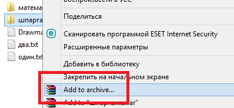

Windows
Командная строка
Запуск командной строки
Пуск --> Найти --> cmd
Команды командной строки
- dir - список файлов и папок
-
cd - перейти в другую папку. Требует задать агрумент (параметр) - в какую папку переходить.
Возмжные значения агрументов:
Скриншоты - копии экрана
При помощи клавиши "Print Screen" (PrtSc-печать экрана)
- Нажать клавишу
- Открыть Paint
- вствавить
При помощи программы "Ножницы"
Как сделать zip-архив
При помощи встроенной в windows функции
- Выделить папку, которую необходимо заархивировать
- Отправить
- Сжатая zip-папка
При помощи программы winRAR
add to archive-(добавить в архив)

Нужно обязательно переключиться с опции по умолчанию (default) на zip.
на главную